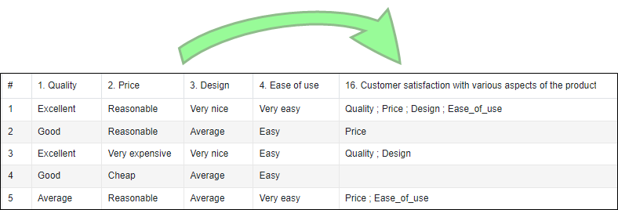

Multiple merge
This function can be used to create a new multiple closed variable whose modalities are the names of the selected variables.
EXAMPLE: A company has recently launched a new product and wants to assess customer satisfaction with various aspects of the product. To this end, a questionnaire has been drawn up covering the following aspects: product quality, price perception, design and ease of use. The aim is to merge these different variables into a single closed multiple variable to quickly and easily identify which aspects of the product are perceived positively by customers. 
Variables and their modalities:
- V1 (Product quality): Excellent, Good, Average, Poor
- V2 (Price perception): Very expensive, Expensive, Reasonable, Cheap
- V3 (Design): Very nice, Nice, Average, Ugly
- V4 (Ease of use): Very easy, Easy, Difficult, Very difficult
The modalities of the new variable to be created will be based on the names or labels of the initial variables, and the observations will indicate the aspects of the product considered positive by customers. The modalities considered 'positive' by the consultant are: 'Excellent' for quality, 'Reasonable' for price, 'Very nice' for design, and 'Very easy' for ease of use.

To perform a multiple merge, proceed as follows:
-
Go to the Data section, Manage variables tab, then click on Multiple merge.
-
Select the variables to be merged.
-
Define a name and label for the new variable.
-
Select the terms that will be taken into account in the new variable.
In our example, the terms considered 'positive' by the consultant are: 'Excellent' for quality, 'Reasonable' for price, 'Very nice' for design, and 'Very easy' for ease of use.
-
By default, the name of the selected variables will be used as the mode of the new variable created. If you wish to use the variable labels instead, select The label of the selected variables.
-
Click on Validate.
The new variable created can be modified from the Structure section, Variables tab. (only for studies created by importing data).